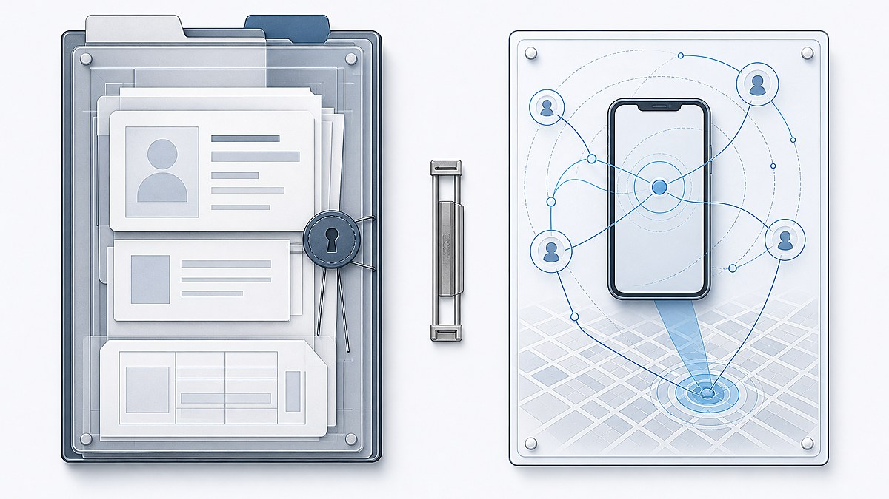
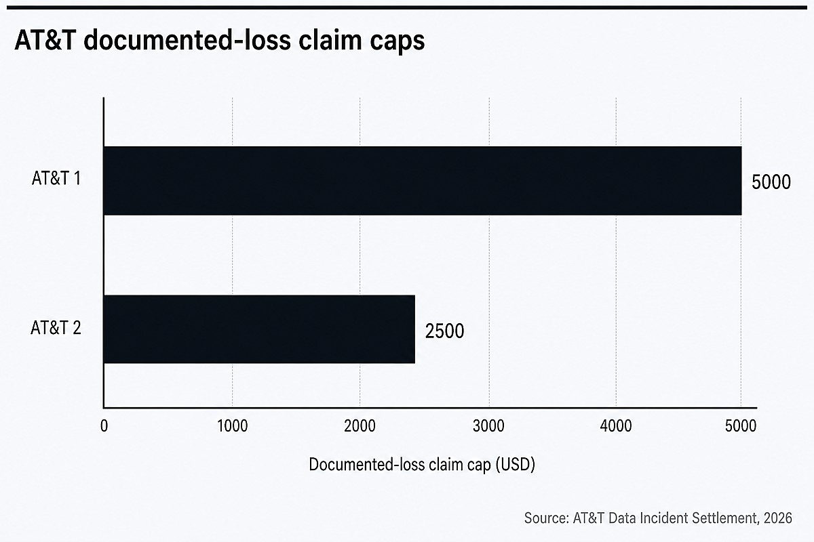
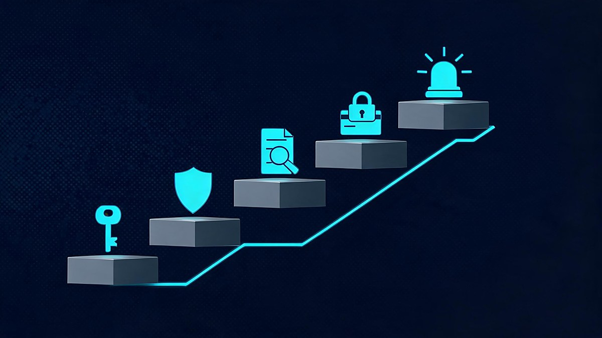

Two different AT&T incidents were disclosed in 2024, and they exposed different types of information. That distinction matters because the settlement rules, the potential risks, and the practical steps for customers are not identical.
In short: The AT&T data breach settlement covers two separate 2024 incidents. The court granted final approval on October 2, 2026, but the claim deadline was December 18, 2025. If you filed a claim, follow the official settlement site for distribution news; if you may be affected, secure your account and credit now.

The settlement combines two incidents, but the information involved was different.
AT&T disclosed one data incident on March 30, 2024, involving a data set released on the dark web, and another on July 12, 2024, involving data downloaded from an AT&T workspace on a third-party cloud platform. The two incidents were later combined in one class-action settlement.
The March incident, called AT&T 1 in the settlement, involved some combination of names, addresses, telephone numbers, email addresses, dates of birth, account passcodes, billing account numbers, and Social Security numbers. The court-authorized settlement website says the affected data elements varied by person. The official settlement notice is the best source for the legal definition of this group.
The July incident, called AT&T 2, involved telephone numbers of current and former customers, the numbers they interacted with, interaction counts, aggregate call durations, and, for a small subset, certain cell-site identification numbers. The settlement notice says this incident did not use the same list of personal-data elements as AT&T 1. Read the settlement class definitions.
| Incident | Announced | Information described in the settlement notice |
|---|---|---|
| AT&T 1 | March 30, 2024 | Personal information that could include Social Security numbers, dates of birth, account passcodes, and billing account numbers |
| AT&T 2 | July 12, 2024 | Telephone numbers, interaction counts, aggregate call-duration data, and limited cell-site information for a small subset |
The key point is simple: the March incident created the more direct identity-theft concern for people whose Social Security numbers or other personal information were included, while the July incident involved communications metadata rather than call or text content.
An exposed record is not proof of account takeover, but it is a reason to review account security.
Being included in an AT&T data incident does not, by itself, prove that someone accessed or took over an individual AT&T account. It does mean that affected people should treat unexpected account activity, password-reset messages, or contact from apparent AT&T representatives with more caution.
Use a browser bookmark or type the AT&T address yourself rather than following a link in a text or email. Once signed in, review your contact details, billing information, linked lines, and account activity for changes you did not make.
AT&T says its account passcodes help verify identity for activities such as calling support or visiting a store. Its current guidance says account passcodes can be changed in the account profile, and new passcodes should avoid obvious sequences or repeated digits. Review AT&T's passcode instructions.
Change the AT&T passcode if it is old, memorable to other people, or reused elsewhere. Also change any password that was reused on another service, because password reuse gives criminals a route that is separate from the AT&T incident itself.
An exposed record is a reason to tighten security, not proof that an account takeover has already happened.
The settlement covered certain people in the United States whose data was included in the March 2024 incident and certain AT&T account owners, line users, or end users affected by the July 2024 incident. However, the deadline to submit a claim was December 18, 2025, so new claims are no longer available.
The settlement administrator defined the first group as living people in the United States whose AT&T 1 data elements were included in the March incident. The second group covered AT&T account owners, line users, and end users whose AT&T 2 data elements were involved in the July incident. People could fall into both groups.
Eligibility did not mean every customer would receive the same sum. A claimant needed to meet the settlement's requirements, and claims for documented losses required supporting evidence. The settlement administrator also states that the final amount available for cash payments depends on valid claims, administration costs, court-awarded fees and costs, and other settlement deductions. See the official eligibility and benefit terms.
The claims deadline was December 18, 2025, not December 18, 2026. Messages offering a fresh way to file a late claim should be treated with suspicion unless they are confirmed on the court-authorized settlement website.
The combined settlement funds total $177 million: $149 million for AT&T 1 and $28 million for AT&T 2. The widely reported maximum of $7,500 was not a standard payment; it referred to the possible total of two separate documented-loss claims for a person who qualified under both incidents.

Documented-loss claim caps, not guaranteed payouts. Source: AT&T Data Incident Settlement, 2026.
For AT&T 1, a documented-loss claim could be worth up to $5,000 for qualifying losses incurred in 2019 or later that were fairly traceable to that incident. Alternatively, eligible claimants could seek a pro rata tier payment. The settlement terms say claimants whose Social Security numbers were involved in AT&T 1 were in Tier 1, with a payment set at five times the Tier 2 amount.
For AT&T 2, a documented-loss claim could be worth up to $2,500 for qualifying losses incurred on or after April 14, 2024. Some account owners could instead select a pro rata Tier 3 payment. The official settlement materials make clear that pro rata payments depend on the number and value of valid claims, so no article can responsibly promise a final check amount. The court's final-approval order confirms the two settlement funds and the documented-loss caps.
Maximum claim amounts are ceilings tied to documented, qualifying losses, not a guaranteed settlement check.
Protecting the AT&T account is useful, but it is not enough if a Social Security number or other identity data may have been exposed. Check credit activity, watch for impersonation attempts, and use official channels to report identity theft if you find evidence of misuse.
Start with these five actions:
For a broader checklist of suspicious activity, review these data breach warning signs. Readers can also follow ongoing data breach coverage when a new incident or settlement claim appears online.
A data breach cannot be undone, but fast account checks, unique credentials, and credit monitoring can limit what criminals can do next.

As of October 6, 2026, the court-authorized settlement website says the court granted final approval on October 2, 2026. It does not list a distribution date, so any precise payment date circulating in social posts, texts, or videos should not be treated as confirmed.
The settlement homepage still contains older language saying the court had not decided whether to approve the deal. That conflicts with the newer, date-stamped October 2 update and the posted memorandum opinion and order. The newer update is the relevant status, but it does not promise that payment will arrive on a particular date.
If a claim was filed before the December 18, 2025 deadline, use the official AT&T Data Incident Settlement website for updates. Do not give a Social Security number, bank-login details, or a payment fee to anyone who says they can accelerate an AT&T settlement payment.
Final approval is an important milestone, but it is not the same thing as a published payment schedule.
You may have been in the settlement class if you were a person in the United States whose data was included in the March 2024 AT&T 1 incident, or an affected AT&T account owner, line user, or end user in the July 2024 AT&T 2 incident. The deadline to submit a claim was December 18, 2025, so new claims are closed.
The court granted final approval on October 2, 2026, according to the court-authorized settlement website. As of October 6, 2026, the site does not publish a distribution date or an individual payment date. Claimants should check the official settlement site and disregard unofficial messages that promise a faster payment.
The court-authorized website confirms final approval of the settlement but does not list a distribution date as of October 6, 2026. That means a claim of payment should not be treated as proof that all approved claimants are being paid. Check the official settlement site for distribution announcements rather than relying on anecdotes.
Inclusion in an AT&T data incident does not prove that an individual AT&T account was accessed or taken over. It does justify checking the account for unauthorized changes, changing the account passcode, avoiding links in unsolicited messages, and monitoring credit if personal data such as a Social Security number may have been exposed.
If a timely claim was filed, save the official settlement website and check it periodically for distribution updates. If you are worried about exposure, take the account and credit-protection steps now, then follow Veritya Daily's cybersecurity coverage for clear updates on breaches, scams, and consumer-security risks.
Verified against the court-authorized settlement website and FTC guidance as of October 8, 2026. This article is general consumer information, not legal or financial advice.